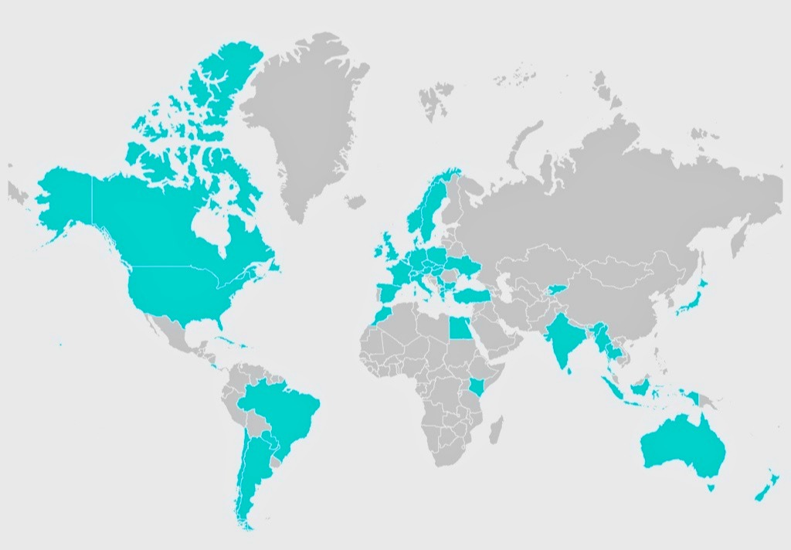
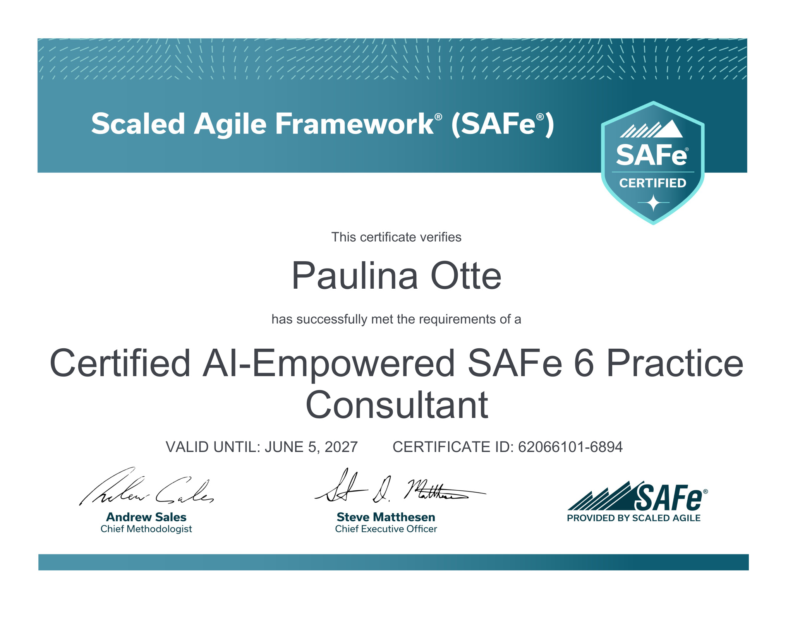
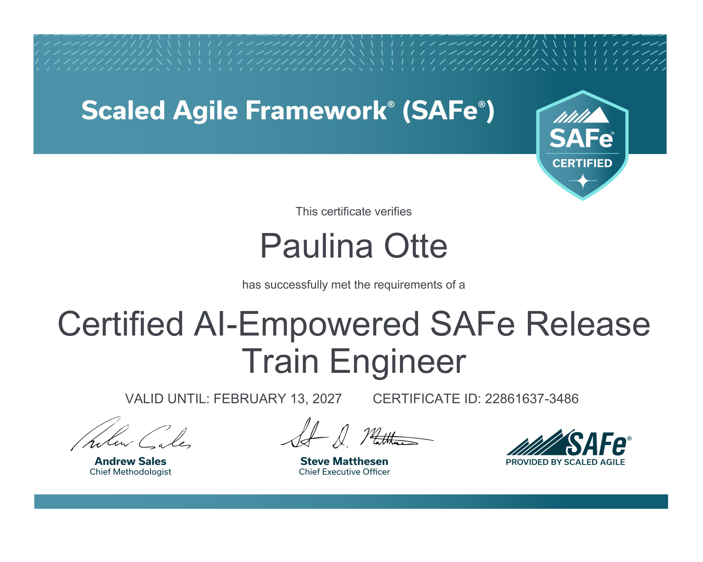
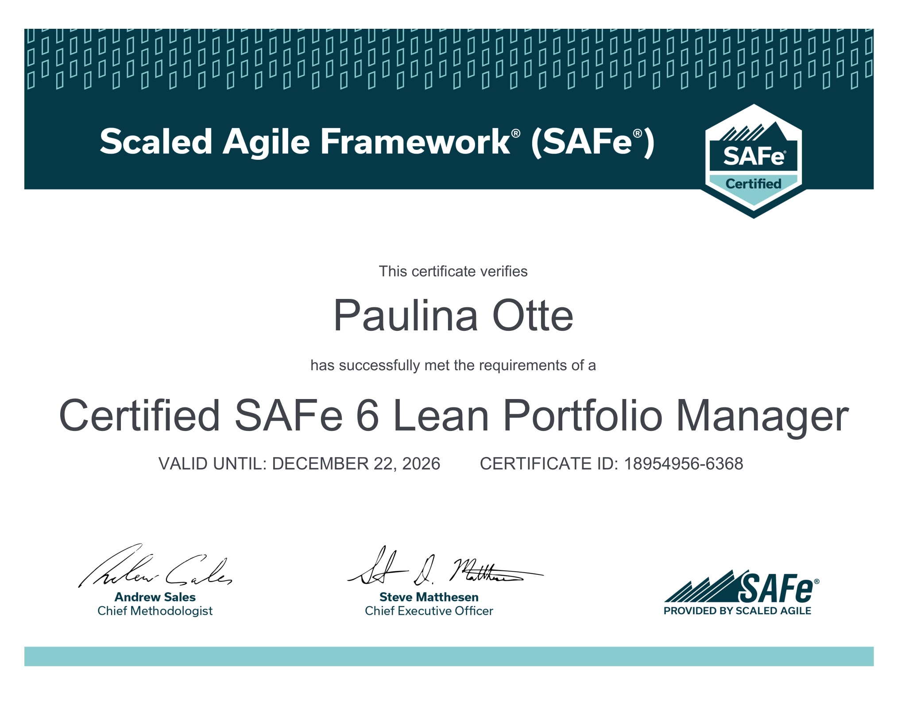
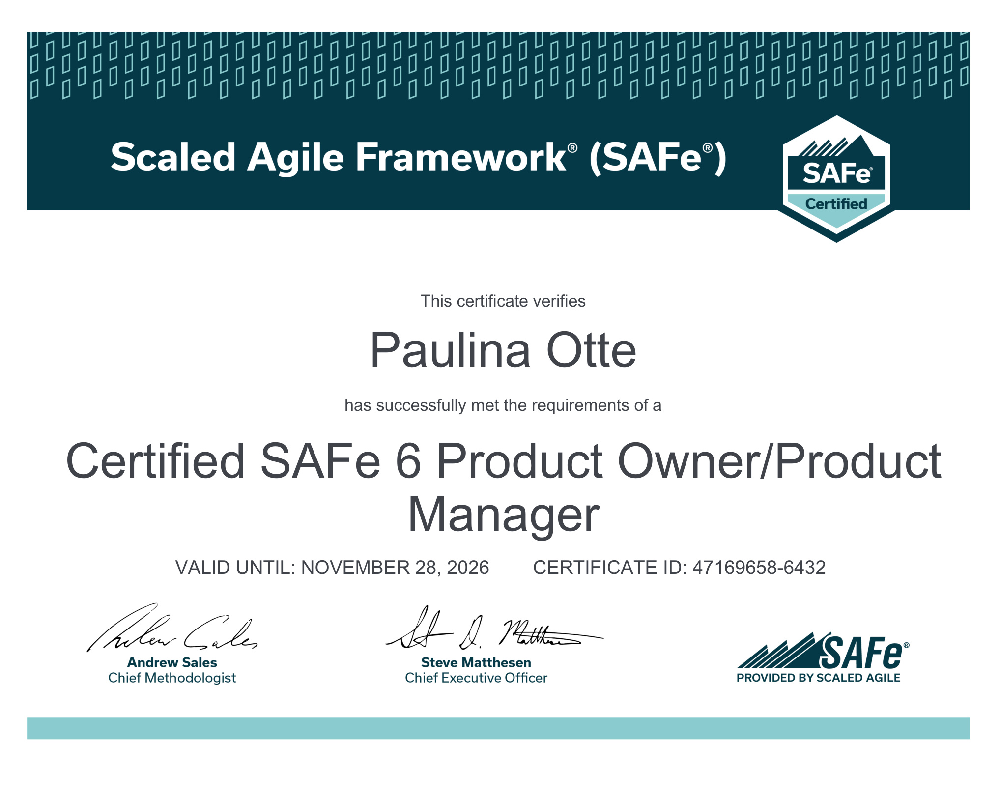
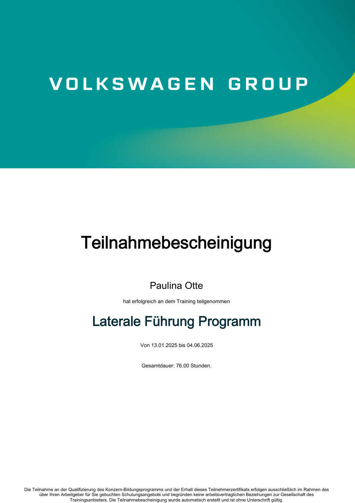
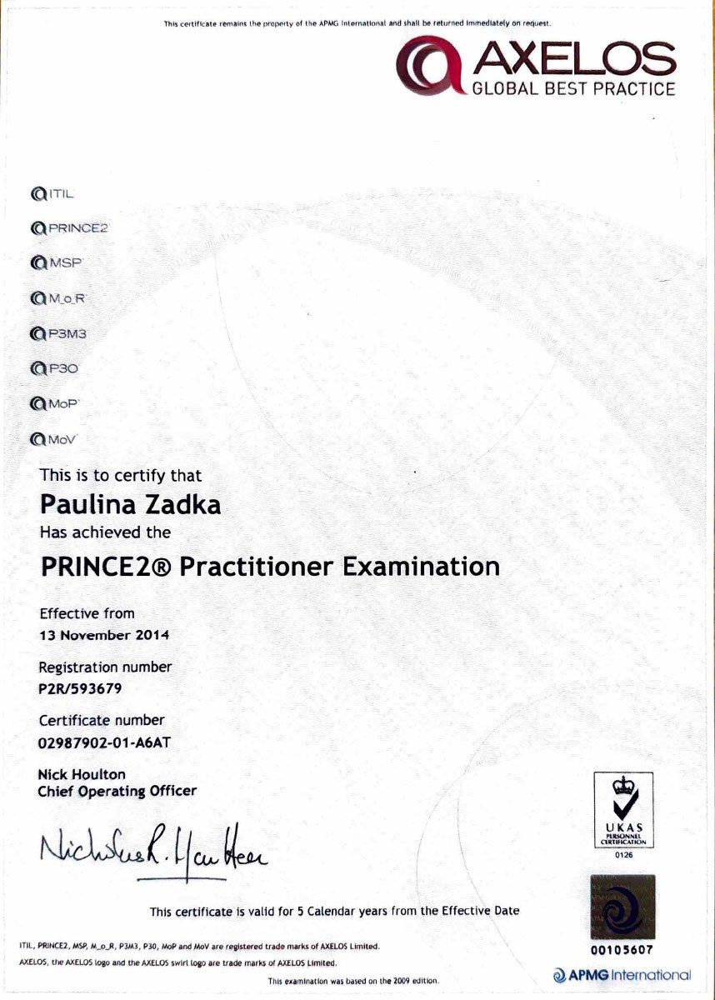
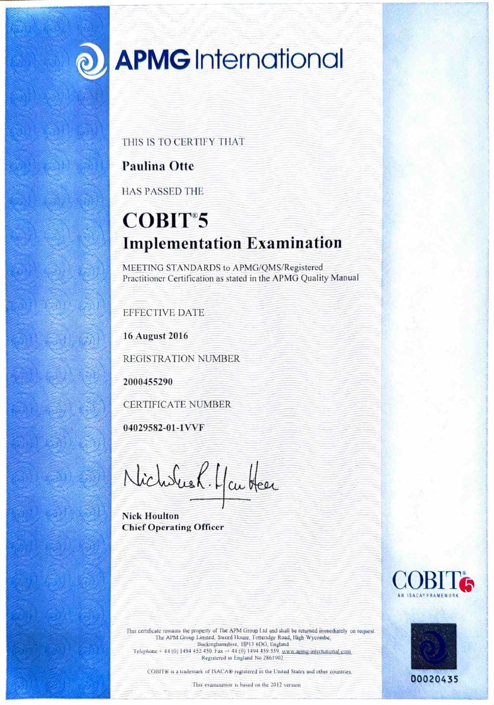
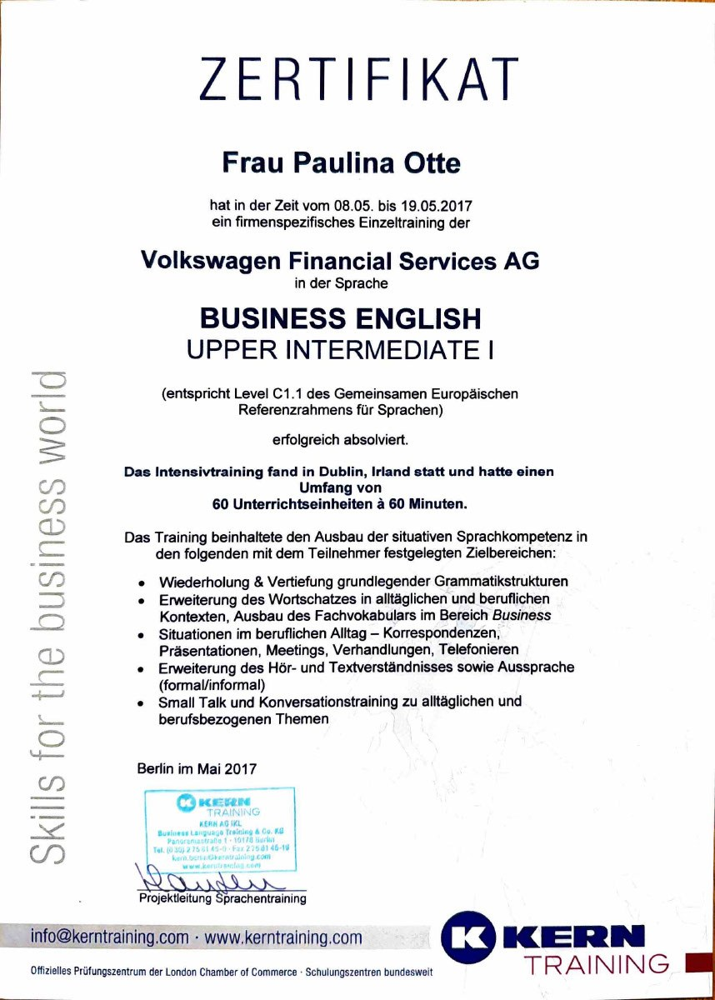
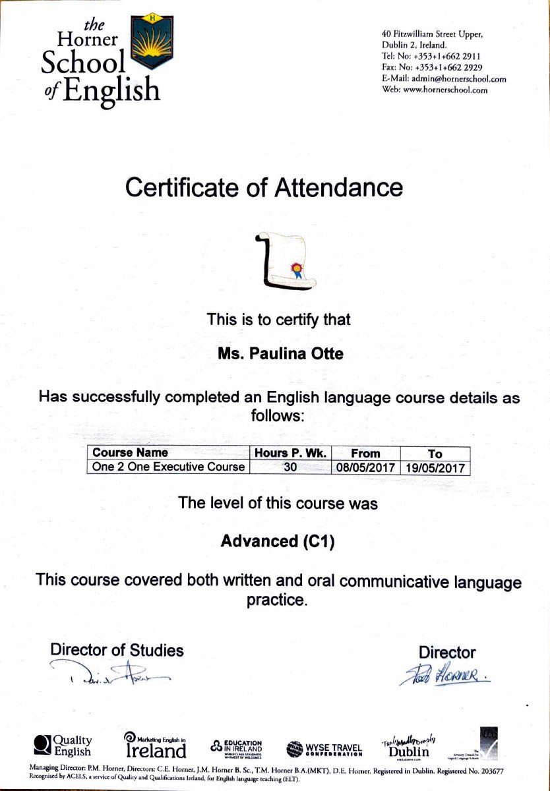

Executive Snapshot
Impact at a glance.
Personal Brand
Leadership with clarity, courage and perspective.
These cards are clickable and lead directly to the deeper sections below.
Who I Am
Growth begins outside the comfort zone.
Moving alone to a new country at the age of 23 taught me one of the most important leadership lessons: growth begins outside the comfort zone.
From Poland to Germany, from consultant to transformation leader, my career has been shaped by curiosity, courage and continuous learning.
Go to Global Perspective →What I Do
Digital transformation at scale
- Solution Train Engineering
- AI & Automation
- Lean Portfolio Management
- Enterprise delivery governance
How I Work
Strategy. People. Execution.
I create alignment across business, IT, architecture, operations and partners so teams can move from complexity to measurable outcomes.
Go to Leadership →My Drive
Running & HYROX
Discipline, resilience and continuous improvement, one step at a time.
Go to Mindset →What Matters
49 countries. Countless perspectives.
Travel, family and new experiences keep me grounded, curious and inspired.
Go to Global Perspective →What I Deliver
Turning complexity into scalable digital solutions.
My work focuses on translating operational business needs into roadmaps, capabilities, prioritised work packages and measurable outcomes.
01
Digital Transformation
Turning business challenges into scalable solutions through clear roadmaps, governance and delivery discipline.
02
AI & Automation
Identifying opportunities, building business cases and scaling AI, RPA and process improvement initiatives.
03
Agile Leadership
Aligning strategy, teams, architecture and operations across complex international organisations.
Career Journey
Enterprise transformation, IT delivery and international operations.
2025 - Present
Volkswagen AG
Solution Train Engineer - Digital Delivery & Operational Transformation
Strategic and operational delivery leadership for cross-functional digital initiatives serving Group After Sales and the German After Sales market. Coordination of five Agile Release Trains with more than 250 professionals.
2023 - 2025
Volkswagen AG
IT Programme Manager - Digitalisation, AI, Automation & Process Improvement
Led a Group-wide portfolio of automation and AI initiatives across Volkswagen AG, Volkswagen Group Components and Volkswagen Passenger Cars. Managed a cross-brand RPA tender worth €16M and scaled delivery to 44 projects per year.
2015 - 2023
Volkswagen Financial Services
Project Manager & Product Owner - International IT Self-Service Platform
End-to-end ownership of the international FS.Get IT self-service platform, including business analysis, solution design, rollout, operations and continuous improvement.
2013 - 2015
BearingPoint Germany
Senior Consultant - IT Quality Assurance, Banking & Insurance
Consulting foundation in test management, requirements management and project management for banking and insurance clients.
2010 - 2013
Accenture Germany, Austria & Switzerland
Consultant - IT Quality Assurance, Banking & Insurance
Early career experience in IT quality assurance, requirements management and complex delivery environments.
Leadership Philosophy
Leadership is not about control. It is about creating clarity, trust and the conditions for people to succeed.
I believe transformation succeeds when people understand the purpose, teams are empowered to act and progress becomes visible. My leadership style combines strategic thinking, delivery discipline and strong stakeholder engagement.Performance Mindset
Running. HYROX. Continuous improvement.
Discipline creates excellence.
Sport has become an essential part of how I think and lead. Running and HYROX reinforce the qualities that matter in business: discipline, resilience, consistency and focus under pressure.
The principles that drive success in endurance sports are the same principles that drive successful transformation: clarity, commitment and continuous improvement.
Global Perspective
Poland. Maastricht. Germany. A career built across borders.
Moving alone to a new country at the age of 23 taught me one of the most important leadership lessons: growth begins outside the comfort zone.
From Poland to Germany, from consultant to transformation leader, my career has been shaped by curiosity, courage and continuous learning.

Professional Credentials
My certificates
Click any certificate thumbnail to open a large preview. The gallery combines agile leadership, scaled delivery, portfolio management, governance, quality and international communication.
{kind=link}

SAFe 6
AI-Empowered SAFe Practice Consultant
Enterprise Agile Leadership · Valid until 2027
{kind=link}

RTE
AI-Empowered SAFe Release Train Engineer
Large Scale Delivery · Valid until 2027
{kind=link}

LPM
SAFe Lean Portfolio Manager
Portfolio Strategy · Valid until 2026
{kind=link}

POPM
SAFe Product Owner / Product Manager
Product Strategy · Valid until 2026
{kind=link}

Leadership
Volkswagen Group Lateral Leadership
Leadership Development · 76-hour programme
{kind=link}

PRINCE2
PRINCE2 Practitioner
Project Governance · APMG / AXELOS
{kind=link}

COBIT 5
COBIT 5 Implementation
IT Governance · APMG
{kind=link}

C1
Business English
International Communication · C1
{kind=link}

Advanced
Executive English Course
Communication & Negotiation · Dublin
AI Career Match
Interested in working with me?
Paste your job description below. The tool analyses how the role matches Paulina's profile in digital transformation, AI & automation, agile delivery, leadership, governance and global perspective.
This is an on-page AI-style match assistant. No data is sent to an external service. For a future version, this can be connected to an AI API.
Analyze Match Score--%
Paste a job description and click Analyze Match.
Why Paulina is a strong fit
- Run the analysis to generate role-specific strengths.
Potential gaps
- Run the analysis to identify topics for discussion.
The download contains two printable pages: Page 1 optimized CV, Page 2 AI Match Report.
Recommendations
What colleagues and leaders say.
Currently collecting references from colleagues and leaders.
Have we worked together?
I value honest feedback from colleagues, leaders and project partners. Your recommendation helps visitors understand not only what I do, but how it feels to work together.
Beyond Work
Family. Travel. Perspective.
Perspective creates better decisions.
Outside work I enjoy travelling, endurance sports and spending time with my family. Exploring new places and cultures constantly reminds me that innovation starts with curiosity and openness to new perspectives.
Contact
Let's Connect
Interested in Digital Transformation, AI, Automation, Agile Delivery or Leadership?
Let's start the conversation.
zadka.p@gmail.com · +49 152 22991189